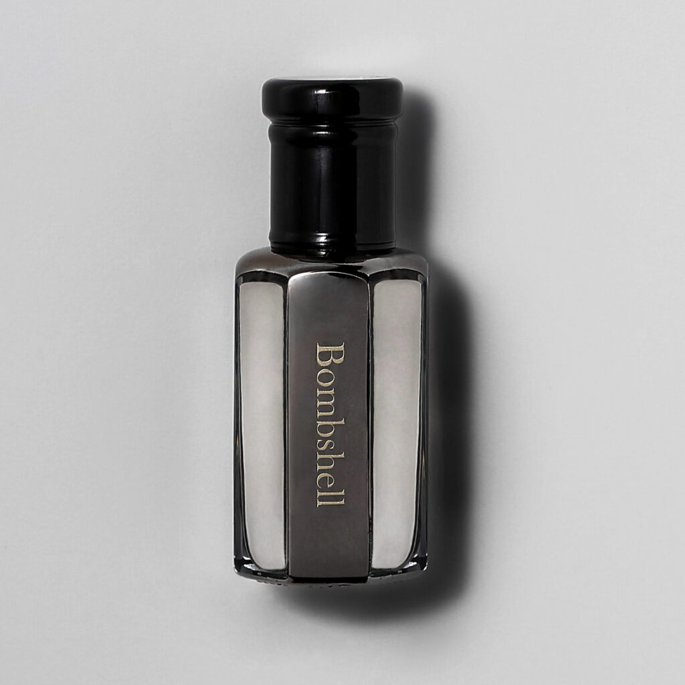
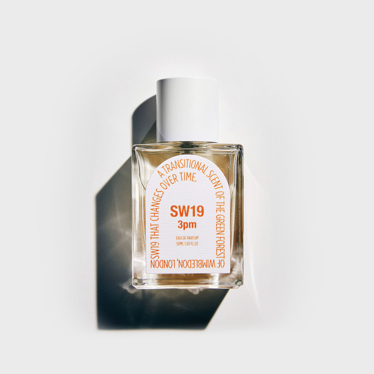
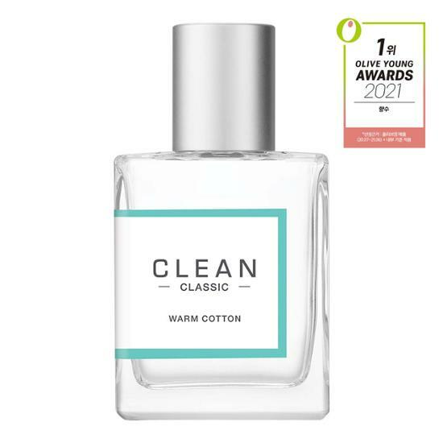

member
preference
perfume
밤쉘 Bombshell
- 향 설명 -
화려한 꽃으로 장식된 베버리 힐즈 로데오 드라이브 거리와
따사로운 햇빛이 들어오는 미국 감성 편집숍의 분위기를 모티브로 탄생한
다니엘 트루스의 핸드 퍼퓸 두 번째 시리즈, 'Truth No.2'.
첫 향은 시트러스 과일의 달콤함과 상큼함이 잠시 느껴지고,
유칼립투스 오일의 프레쉬함과 시원함을 지나 베이스 노트에서는
드리프트우드와 시더우드의 부드럽고 그윽한 향을 연출하며
제라늄과 일랑일랑꽃오일의 성숙한 야생화 꽃잎 향으로 마무리되는
사랑스럽고 우아한 향.
3pm
- 향 설명 -
"햇살이 내리쬐는 푸른 잔디와 부드럽고 향긋한 과일의 향취"
이슬 젖은 초록숲이 상큼한 햇살에 말라가는 윔블던의 오후.
공원에 만개한 꽃들의 향기와 홍차에 띄운 레몬 조각 향기가 어우러진 윔블던의 오후 3시를 느껴보세요.
클린웜코튼 Clean Warm Cotton
- 향 설명 -
갓 세탁한 섬유에서 나는 뽀송뽀송하고 포근한 향.
깊은 숨을 들이마시고 싶게 하는 산뜻하고 편안한 순간에서 영감을 얻은 코튼향.